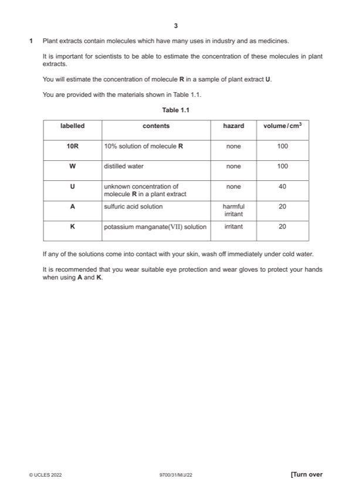

Question 1

Original paper page 3
Part 1(a)(i) — solution
1. correct concentrations (5.0, 2.5, 1.25, 0.625) and % at least once ; 3
2. shows transfer of 10(cm3) to each beaker from the previous beaker ;
3. shows 10 (cm3) of water added to each beaker ;
Mark points
- Include the ideas shown in the solution above.
Part 1(a)(ii) — solution
1. heading for independent variable: percentage concentration of molecule R (before heading for dependent variable) 5
and no units in body of table ;
2. heading dependent variable: number of drops ;
3. results recorded for all concentrations ;
4. number of drops recorded for the highest concentration of R is fewer than for the lowest concentration of R ;
5. results recorded as whole drops ;
Mark points
- Include the ideas shown in the solution above.
Part 1(a)(iii) — solution
identifies two errors, e.g. drop size varies, difficult to judge endpoint ; ; 2
Mark points
- Include the ideas shown in the solution above.
Part 1(a)(iv) — solution
any one improvement and must be linked to an error in 1(a)(iii), e.g.: 1
1. (drop size varies) measure the volume used instead of the number of drops ;
2. (difficult to judge endpoint) use a colorimeter ;
Mark points
- Include the ideas shown in the solution above.
Part 1(a)(v) — solution
records a number for U that is less than that recorded for 10 and more than that recorded for the lowest concentration ; 1
Mark points
- Include the ideas shown in the solution above.
Part 1(a)(vi) — solution
correctly labels scale bar with different concentrations of molecule R ; 1
concentrations must match to those listed in 1(a)(ii)
Mark points
- Include the ideas shown in the solution above.
Part 1(a)(vii) — solution
estimates the correct concentration of R in U by placing U in the correct position on the scale bar ; 1
Mark points
- Include the ideas shown in the solution above.
Part 1(b)(i) — solution
1. x-axis: plant extract and bars labelled B, C, D, E and F 4
and
y-axis: time / s ;
2. x-axis: even width of bars
and
scale on y-axis: 10 seconds to 2 cm, labelled at least each 2 cm ;
3. correct plotting of all five bars ;
4. five separate bars drawn and with horizontal and vertical lines joined precisely ;
Mark points
- Include the ideas shown in the solution above.
Part 1(b)(ii) — solution
plant extract F ; 1
2022 Page 4 of 6
9700/31 Cambridge International AS & A Level – Mark Scheme May/June 2022
Mark points
- Include the ideas shown in the solution above.
Part 1(c)(i) — solution
1 22 g cm-2 ; 1
Mark points
- Include the ideas shown in the solution above.
Part 1(c)(ii) — solution
any two from: 2
1. prevents formation of cell, wall / membrane ;
2. cell / bacterial, lysis or cells / bacteria, burst ;
3. inhibits, transcription / translation / protein synthesis ;
4. inhibits cell division ;
5. acts as an enzyme inhibitor ;
6. inhibits DNA, replication / synthesis ;
Mark points
- Include the ideas shown in the solution above.